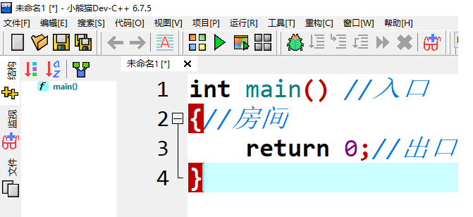
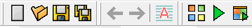
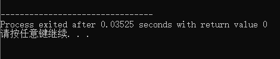

第一个程序
什么是c++
C++是C语言的继承，它既可以像C语言一样过程化 设计程序 ，又可以基于对象设计程序。C++ 拥有运行高效的高级程序设计语言 。
首先它是一门语言，可以让我们和电脑之间交流，并且通过设计程序可以让电脑帮助我们做很多事情。
程序从哪里开始
假如程序是一座房子，那么它应该有一个正门。里面可能有很多个房间。往前走房子的另一头还有一个出口。那么程序应该从一个入口开始，main(主要的)就是程序的入口。
最简单的程序
让我们开始写第一个简单的程序，简单到它只有入口和出口还有四面墙，房间里面什么都没有。
int main() //入口
{//房间
return 0;//出口
}
我可以把这些字输入到软件Dev-C++中
点击两下 打开
打开
如果还没有安装可以 点击 查看安装方法。
如何使用dev cpp
启动dev c++这时候会看到一个类似这样的界面

工具栏
这部分为快速工具

第一个 点击一下可以让我们快速的建立一个空文件，就可以开始c++程序的编写，当编写完成后就应该保存起来并且取个名字，那就应该点击
点击一下可以让我们快速的建立一个空文件，就可以开始c++程序的编写，当编写完成后就应该保存起来并且取个名字，那就应该点击
 ，这时会让你选一个地方保存起来。
，这时会让你选一个地方保存起来。

取一个好记的名字并且点保存就完成了。
我的程序
似乎到现在我还没看到我写的程序，只是一个文件与几行代码。所以需要把代码转换成程序可以点击这里
 ，开始编译并执行刚才的文件，编译的过程就像一个英语老师检查文件是否符合c++语法，检查完还会把它翻译给机器让它运作起来。
，开始编译并执行刚才的文件，编译的过程就像一个英语老师检查文件是否符合c++语法，检查完还会把它翻译给机器让它运作起来。

虽然这个程序什么都没做，但是却是一个里程碑。你已经写出了第一个c++程序并且让他运行起来了，是不是很简单。程序从main这个入口开始，最后到return这个出口出去。
好了现在要个程序加点料让它充实一点，来继续探索输入输出小推车。